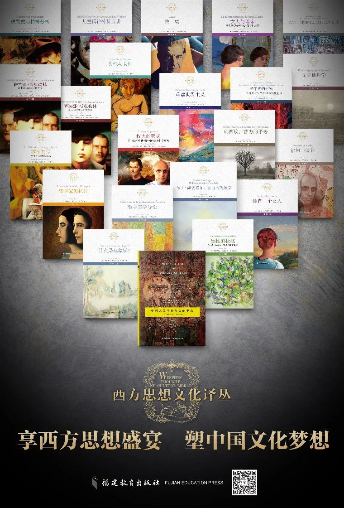

《西方思想文化译丛》
《西方思想文化译丛》按出版时间持续扩展，早期以精神分析、女性问题与法国思想文化研究为主，近年进一步延伸至现象学、文学地理学、德里达、贝克莱、笛卡尔与帕斯卡、柏格森等专题。
本站书目收录 29 册图书，每册均列出书名、作者或编者、译者、出版社、出版时间、内容简介与封面图，便于读者按出版脉络了解译丛的主题展开。
出版回顾：《一套丛书的十年出版路》·《中华读书报》 ↗按出版时间排列的书目
以下书目按出版时间升序排列，共 29 册。点击书名或“阅读详情”进入可分享的独立图书页面，也可使用“快速预览”查看完整简介。
欲望书写 色情文学话语分析
从古至今，色情文学一直都是一个富有争议、被禁忌的话题。本书从分析色情文学的话语体裁入手，将色情文学与已知的话语体裁做比较，分析其形成条件语言机制。同时，历史性的研究了色情文学从文艺复兴以来的演…
女人与母亲 从弗洛伊德至拉康的女性难题
“女人需要什么？”对此，弗洛伊德和拉康有着不同的回答，弗洛伊德的回应是成为理想化的母亲，拉康的回应则是成为欲望的对象。为了在弗洛伊德和拉康之间做出正确的选择，作者对弗洛伊德关于女性的人类学的重…
萨宾娜·斯皮勒林 在弗洛伊德与荣格之间（上册）
本书披露了他对弗洛伊德和荣格两位精神分析学大师的研究资料。以及三人间的交流史料，他与弗洛伊德、荣格的通信，还有他的个人日记，其中记录了她和这两个男人之间发生的一些故事，关于精神分析的理论制作，…

萨宾娜·斯皮勒林 在弗洛伊德与荣格之间（下册）
本书披露了他对弗洛伊德和荣格两位精神分析学大师的研究资料。以及三人间的交流史料，他与弗洛伊德、荣格的通信，还有他的个人日记，其中记录了她和这两个男人之间发生的一些故事，关于精神分析的理论制作，…
感性的抵抗 梅洛-庞蒂对透明性的批判
作者围绕梅洛-庞蒂思想的几大核心问题，结合哲学家在各个历史阶段所受德国现象学、精神分析、格式塔心理学、儿童心理学、神经病学、自然科学、语言学、社会学等方面的影响和发展展示。梅洛-庞蒂思想诞生的…
中国人关于神与灵的观念
译者系根据1852年出版影印本翻译，李雅各的这本书并非严格意义上的学术专著，也非现代规范化的学术论文。而是将论辩中的思考与观点重新梳理并集结成书。本书虽然不厚，原文总计166页，但作者论述所涉…
子午线的牢笼-全球化时代的文学与当代艺术
该书深刻地剖析了文学和当代艺术的关系，提到了全球化对文学和艺术的影响。书中还探讨了当代艺术的多样性，从传统绘画到装置艺术，每一种形式都在用自己的方式表达着对世界的理解和感受。
文学、地理和后现代地方诗学
文学地理和后现代地方诗学是当代欧美文学地理学研究的一部力著，研究主要针对当代文学的地方表征，借鉴了现象学、后结构和后殖民空间和地方理论，展示了文学如何有助于新的地理身份的形成。通过对塞缪尔·贝…
马丁·海德格尔：自由的现象学
此书以存在与时间为主要文本，认为海德格尔哲学可被归结为一种自由的现象学，其存在论的基本范畴如此在的实存论结构、此在本真性和非本真性的划分、时间性等都可归结为自由问题的不同，展现费格尔教授这一独…
精神病患者的艺术作品
此书结合了数十年的教研与临床实践经验，探讨了精神病结构与临床治疗中艺术创造的作用，是对精神病人创造的文字与作品，以精神分析的角度进行详细的分析和讨论。
迷失地图集：地理批评研究
该书是对已有的地理批评理论成果的一次总结，也标志着法国地理批评学派地图转向的开启，该书由1篇长序和11篇文章组成。因为地图和文学作品一样，具有引导观者认知并重构现实世界的功能，所以作者在书中旁…
贝克莱的世界：关于三次对话的考察
本书是汤姆·斯通汉姆教授对乔治·贝克莱哲学著作《海拉斯和菲洛诺斯之间的三次对话》的解读，《海拉斯和斐洛诺斯之间的三次对话》是贝克莱1713年出版的重要哲学著作，也是他发展唯心主义的关键性作品。…
雅克·拉康的“父姓”-标点与问题
作者埃里克·波尔热在本书中解析了精神分析大师拉康提出的“父姓”概念。通俗来说，“父姓”不仅是父亲传给孩子的姓氏，更是一种象征性的身份纽带，它代表社会对父亲角色的认可，也承载着父亲自我认同的核心…
笛卡尔与帕斯卡：蒙田的阅读者
本书首次系统地将法国思想史的源头追溯至16世纪，强调蒙田的怀疑主义对现代哲学的深远影响。在20世纪德国哲学盛行的背景下，布朗什维克重新确立了蒙田、笛卡尔和帕斯卡思想的重要性，揭示了它们在确立现…